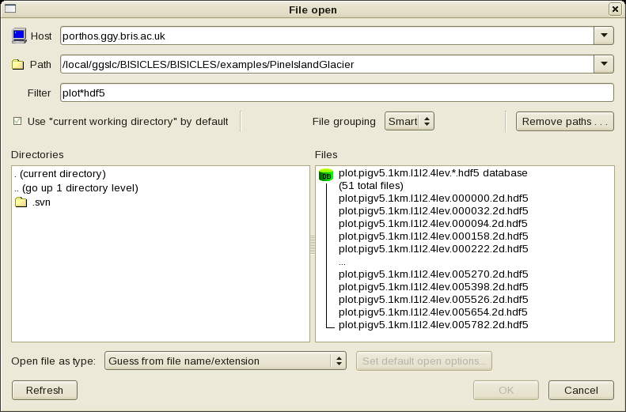
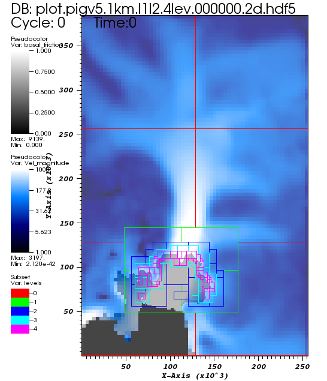

Viewing BISICLES output with VisIt
VisIt can be obtained from https://wci.llnl.gov/codes/visit/.
This document aims to show how you can view BISICLES data in VisIt by describing the steps necessary to produce a video of Pine Island Glacier retreating from the data produced in the Pine Island Glacier example. So, run that example before you continue. We assume you have installed VisIt on a workstation that has direct access to the plot files, although it is also possible (and often more convenient) to use the remote host features of VisIt to view remote files.
Opening a string of files
From VisIt 's main Window, select File - > Open. Use the resulting file dialog to browse to the directory where the plot files are stores. In the screenshot below, we have used a filter 'plot hdf5 ' to avoid seeing a whole bunch of files (including check point files called chk hdf5) that VisIt can 't open. If you also select "Smart File Grouping " the various plot files should be grouped together into a notional object, in this case called
plot.pigv5.1km.l1l2.4lev.*hdf5 database

Select that object, and it should appear as the "Active Source " on VisIt 's main window.
- choose Plots - > Add - > psuedocolor - > basal_friction (from the toolbar about halfway down the main window). Double click the item that appears in the Plots list title Psuedocolor - basal friction, and modify the resulting dialog to give a maximum value of 1, change the Color table to "gray " and the Opacity to 25%.
- choose Plots - > Add - > psuedocolor - > Vel_magnitude (from the toolbar about halfway down the main window). Double click the Vel_magnitude item, and modify the resulting dialog to give a log scale, a minimum value of 1 and a maximum value of 1e3. Change the Color table to "bluehot "
- choose Plots - > Add - > subset - > levels. Double Click the Subset - levels item and check the wireframe box in the resulting dialog.
Click the Draw button, and you should see an image like this:

The colormap shows the ice flow speed, while the use of a translucent mask derived from basal_friction outlines the ice shelf. The progressively small and gaudy boxes indicate regions of progressively higher resolution - in the image above, the smallest boxes are regions of 250m resolution. If you only see large boxes, make sure "Apply subset selections to all plots ' (at the bottom of VisIt 's main window) is checked and the follow the Controls - > subset - > menu item to select all levels.
Now you can use the Time slider in the main window, or the playback button below it, or the playback button in the image window ( "Window 1; ") to watch the grounding line retreat merrily up Pine Island Glacier 's trunk, and the mesh evolve with it so that high resolution is maintained at the grounding line. Feel free to add velocity vectors ...